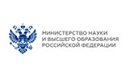
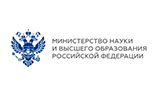

Дистанционное обучение
Телефоны «горячей линии» по вопросам организации дистанционного обучения:
Министерство образования и науки Амурской области 8(4162)226505, 8(4162)226201
Амурский ИРО 89143959142
Администрация Тамбовского района 8(41638)21613
МБОУ Николаевская СОШ 8(41638)36318
Приказ Министерства образования и науки РФ от 23 августа 2017 г. N 816 «Об утверждении Порядка применения организациями, осуществляющими образовательную деятельность, электронного обучения, дистанционных образовательных технологий при реализации образовательных программ»
Приказ Министерства просвещения РФ от 17.03.2020 г. N 103 «Об утверждении временного порядка сопровождения реализации образовательных программ начального общего, основного общего, среднего общего образования, образовательных программ среднего профессионального образования и дополнительных общеобразовательных программ с применением электронного обучения и дистанционных образовательных технологий»
Приказ министерства образования Амурской области от 20.03.2020 №285 «Об организации образовательной деятельности в организациях, реализующих образовательные программы начального общего, основного общего, среднего общего образования, в условиях распространения новой коронавирусной инфекции на территории Амурской области»
Приказ отдела образования администрации Тамбовского района от 21.03.2020 г. № 141 «Об организации образовательной деятельности в организациях, реализующих образовательные программы начального общего, основного общего и среднего общего образования, дополнительные общеобразовательные программы, в условиях распространения новой коронавирусной инфекции»
Приказ МБОУ Николаевской СОШ от 23.03.2020 №47 «Об организации дистанционного обучения в образовательной организации»
Приказ МБОУ Николаевской СОШ от 20.04.2020 №53 «О продолжении дистанционного обучения в школе»
Положение об электронном обучении и использовании дистанционных образовательных технологий при реализации образовательных программ


 
